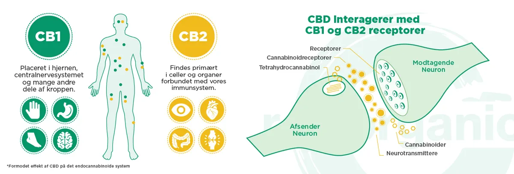
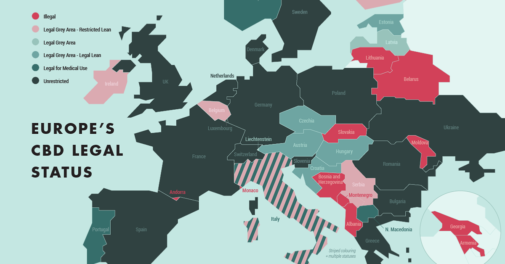
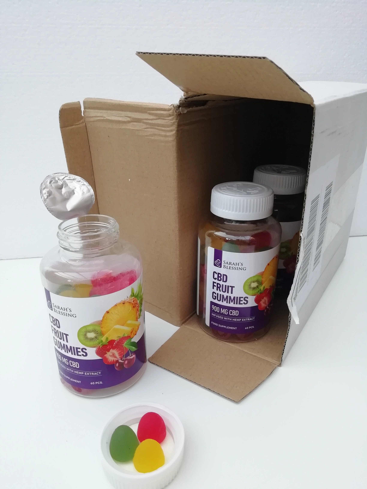

Forside > Tendenser › Sundhed og velvære
Smertelindring på kun 4 dage - Derfor er disse gummies bedre end dyr CBD-olie.
 Share
Share
 Tweet
Tweet
 Pin
Pin
 Email
Email
 Share
Share
En ny generation af CBD-teknologi er nu endelig tilgængelig i Danmark og kan købes uden recept. Og det bedste er, at ...
Det bruger en ny absorptionsmetode, der er 450 % mere absorberbar end kapsler og olier. Desuden smager det fantastisk og giver dig op til 5 gange mere lindring for pengene uden at efterlade en sur eftersmag i munden eller i din pengepung.
Sarah's Blessings nye CBD gummier indeholder rene, koncentrerede doser af hampeekstrakt, kendt som CBD eller cannabidiol, som kan hjælpe med at lindre selv de mest generende ledproblemer såvel som generelle muskelsmerter, ømme muskler, søvnbesvær, angst og mange andre sundhedsproblemer. Og da det er UDEN THC, bliver du ikke "høj".
Det beroliger, afspænder og løsner spændinger i hele kroppen.
Desværre kan det meste CBD, der findes på markedet, ikke levere en brøkdel af disse resultater. siger Green Gardeners chefteknolog Mi Hwa Kim. "Olie trænger ikke ind i cellemembranen, hvor den egentlige heling finder sted. Vores krop består af 80 % vand, og vores celler består af 90 % vand. Og du ved, hvad man siger om olie og vand - de kan ikke enes."
Derfor indeholder Sarah's Blessing CBD-frugtgummies et unikt "vandopløseligt" system. Denne teknologi har vist sig at forbedre absorptionen i cellerne med 450 % og hurtigt øge cannabinoidniveauet i kroppen.
Amerikanske forskere har udnævnt det som et af de stærkeste smertestillende midler på planeten. Og flere og flere danske læger er også overrasket over den fantastiske succes for deres patienter, der lider af smerter, som ikke kan behandles.
Jeg vil fortælle dig, hvorfor flere og flere danske kendte nu går ind for denne alternative medicin...
Folk, som allerede havde opgivet håbet om at få et bedre helbred, er chokerede over, at dette middel ikke har været lovligt tilgængeligt i årtier. For dette næsten glemte "smertestillende middel" er ikke vanedannende, har ingen bivirkninger, er 100 % naturligt og begynder at virke i kroppen på mindre end 30 minutter.
Det er ikke marihuana, for marihuana eller cannabis er ikke lovligt tilgængeligt i Danmark. I hvert fald ikke, hvis det indeholder THC, det euforiserende aktive stof. Men det er noget, som førende forskere kalder det største gennembrud inden for smertelindring siden opdagelsen af aspirin.
I det seneste år er det blevet omtalt flittigt på Dr. Oz, NBC, CNN, The Today Show, ESPN og snesevis af andre store nyhedskilder. Og i dag siger titusinder af mennesker, at det har hjulpet dem med nervesmerter, ledsmerter, rygsmerter, søvnforstyrrelser, gigt og meget mere.
Vi taler om CBD.
Hvad er CBD?
Det er ukendt for mange, men CBD kan være et helt naturligt middel mod kroniske smerter, angst, søvnforstyrrelser og depression.

Desværre kender de fleste mennesker kun cannabis (latin for hamp) som et narkotikum. Men kun få kender til den lange tradition for planten i Europa. Det ældste europæiske fund af hamp er f.eks. fundet i det nuværende Tyskland og går tilbage til 5.500 f.Kr. Johannes Gutenberg trykte endda den første bibel på papir lavet af hamp i 1455. Cannabis er således en af de ældste dyrkede og nyttige planter. Faktisk meget ældre end kartoflen, som kom til Europa i 1537 med de spanske soldater.
Allerede i det 12. århundrede var de benediktinske nonner opmærksomme på det medicinske potentiale af denne plante med dens smertestillende og fordøjelsesfremmende egenskaber (1). I det 19. århundrede var cannabisolie en af de mest populære ”universalmidler”, og de fleste apoteker ordinerede det til både ydre lidelser (f.eks. ligtorne og vorter) og indre lidelser (f.eks. smerter, migræne og søvnforstyrrelser) (2).
I dag betragtes cannabis som en fremadskuende plante, der anvendes i moderne forskning på forskellige områder. F.eks. er det nu lykkedes eksperterne fra Sarah's Blessing-mærket at udvikle "rusmiddelfrie" cannabis-frugtgummies. I modsætning til CBD-olie er disse frugtgummies meget mere bekvemme at tage og har en meget bedre virkning.
Hvordan virker CBD, og er det 100 % lovligt?
CBD er særligt værdsat, fordi det kan hjælpe med en lang række problemer. Det påvirker endocannabinoid-systemet (ECS) i ens egen krop og har positive virkninger på forskellige kropsfunktioner:
- Styrker knoglerne
- Hjælper ved gigt
- Lindrer led- og knoglesmerter
- Mod grøn stær
- Binder forurenende stoffer
- Lindrer smerter
- Mod angst
- Virker som et antidepressivt middel
- Forbedrer hukommelsen
- Stabiliserer blodtrykket
- Reducerer stresssymptomer
- Hjælper med at forebygge erektil dysfunktion
- Reducerer psoriasis
- Anti-aging effekt
- Reducerer akne
- Anti-inflammatorisk
- Lindrer mavesmerter
- Virker som en appetitnedsættende middel
Knogler
Øjne
Hjernen
Hjerte
Hud
Mave
Siden 2018 er CBD derfor tilgængelig i Danmark. På grund af den euforiserende virkning (forårsaget af THC) kræver almindelig cannabis dog en recept.
Derfor kan Sarah's Blessing CBD-frugtgummies også øge dit velvære gevaldigt
Men der er også gode nyheder, for forskere har fundet ud af, at mange af de positive egenskaber ved cannabis er baseret på det ikke-toksiske aktive stof CBD (cannabidiol). Dette understøtter kroppens egne vitale funktioner og dermed dens egen heling samt lindring af forskellige lidelser. CBD siges at kunne reducere angst, stress og endda kroniske smerter betydeligt. Især aldersrelaterede sundhedsproblemer kan af erfaring afhjælpes.
Og fordi CBD ikke er euforiserende, er det heller ikke receptpligtigt. I sidste ende er det først og fremmest forbrugerne, der får gavn af dette. WHO og andre tilsynsmyndigheder klassificerer CBD som et sikkert stof med et lavt risikoniveau.
CBD er:
- ikke euforiserende
- ikke-toksisk
- og ikke afhængighedsskabende
Hvad gør CBD-frugtgummies fra Sarah's Blessing så unikke?
Europas Nr.1 CBD-frugtgummies er så populære, at der allerede er solgt over 1.500.000 pakker. Nøglen til de sundhedsmæssige fordele ved frugtgummies er det endocannabinoide system i din egen krop. Et netværk af receptorer i cellerne.
Systemet er til for at opretholde balancen (homeostase). Som reaktion på giftstoffer i kroppen frigiver det cannabinoider for at genoprette tingene til deres naturlige tilstand. CBD's aktive ingredienser lægger sig direkte til kroppens egne endocannabinoidreceptorer. CBD er altså ikke fremmed for kroppen, den kan blive yderst positivt støttet af CBD.
Sarah's Blessing CBD-frugtgummies styrker dit endocannabinoide system - lindrer smerter, forbedrer søvncyklusser, humør, hukommelse, koncentration og meget mere.
Det bedste af det hele er, at det ikke indeholder THC eller psykoaktive stoffer, så du får fantastiske resultater helt uden beruselse.
Er CBD-frugtgummies fra Sarah's Blessing sikkert at tage?
Jeg har fået fat på CBD-frugtgummies og kiggede nærmere på producenten. Det viste sig, at Sarah's Blessing kun bruger schweiziske ingredienser til sine frugtgummi. Økologisk hamp af højeste kvalitet. CBD'en ekstraheres derefter ved hjælp af den miljøvenlige og giftfrie CO₂ kold ekstraktionsmetode. Dette sikrer, at alle aktive planteingredienser bevares.
I modsætning til andre producenter bruger Sarah's Blessing kokosolie som base. Det er ikke kun sundere og mere miljøvenligt end palmeolie, men det smager også godt.
Hvert enkelt parti analyseres også af et tredjepartslaboratorium og testes for renhed og effektivitet. Dette er for at sikre en ensartet dosering og sikkerhed.
Sarah's Blessing CBD-frugtgummies er et fremskridt inden for smertemedicin. I lighed med syntetisk fremstillede lægemidler undertrykker indtagelse af CBD-dannelsen af proinflammatoriske vævshormoner, men i modsætning til kemiske lægemidler påvirker det ikke nyrerne, hjertet, tarmene og leveren negativt.
De kan bruges på alle tidspunkter af dagen uden problemer. Med CBD er der endelig en måde at styrke kroppen indefra og udad på, uden frygt for bivirkninger.
CBD-frugtgummies fra Sarah's Blessing tilbyder et certificeret økologisk fuldspektret CBD-produkt til en uovertruffen pris. Afhængigt af den pakke, du vælger, får du endda gratis bonusglas!
Det er også særligt velegnet til ældre mennesker, da CBD-ekstraktet med hele spektret er pakket i liposomer og derfor kan optages bedre af kroppen.

Mange tusinder er overbeviste om effektiviteten af CBD frugtgummies
Mange tilfredse kunder deler deres succeser på alle sociale medier. For folk, der lider af smerter, stress eller endda angst, kan CBD-frugtgummies være et lovende alternativ til kemiske lægemidler.
I ekstraordinære rapporter fra tusindvis af kunder fortæller de om deres oplevelser. Efter 3 ugers regelmæssig brug har de fleste allerede noteret sig ekstreme forbedringer.
Fordi CBD-frugtgummies ikke kun kan hjælpe med søvnproblemer, hudsygdomme og indre uro, men også med en række smerter. Undersøgelser har vist, at cannabidiol har antiinflammatoriske, nervebeskyttende og krampeløsende virkninger.
Konventionelle smertebehandlinger er ofte ikke særlig effektive. For mange smertepatienter er Sarah's Blessing CBD-frugtgummies derfor nu nyt håb. CBD-ekstrakter virker naturligt og kan drastisk reducere behovet for kemiske smertestillende midler og dermed også deres bivirkninger.
Hvor meget koster disse unikke CBD-frugtgummies?
Min kollega på redaktionen har anslået CBD-frugtgummies fra Sarah's Blessing til 700-900 kr. Det gennemsnitlige skøn var 820 kr. Derfor var det svært at tro, at Sarah's Blessing, som blev så positivt vurderet, var tilgængelig i en multipakke til kun 466.57 kr pr. styk!
Hvordan kan Sarah's Blessing frugtgummies være så billige?
Virksomheden køber meget store mængder direkte fra schweiziske økologiske producenter. De fjerner de sædvanlige mellemhandlere og grossister og sparer dermed på en stor del af de unødvendige omkostninger. Disse besparelser giver de videre til deres kunder uden omveje.
Bemærk: Ved min egen bestilling kom leveringen efter 4 dage, ikke helt efter 3 dage som lovet af producenten, men alt var pænt og ordentligt pakket.

Hvor kan jeg få fat i de lækre Sarah's Blessing CBD-frugtgummies?
Mens nogle kunder rapporterer fantastiske resultater efter et par dage, kræver det også lidt tålmodighed. Dette er en naturprodukt, som hjælper kroppen med at finde sin balance igen. Denne proces er normalt allerede i fuld gang efter 3 uger.
Med sine 100% naturlige produkter, positive anmeldelser, sikre online betalinger og en pengene-tilbage garanti, giver Sarah's Blessing tusindvis af kunder muligheden for at lægge en tid med lidelser bag sig og starte et nyt liv fuld af glæde og handlekraft.
Du kan i øjeblikket kun købe de lækre CBD-frugtgummies fra Sarah's Blessing på internettet på producentens hjemmeside.
Prøvetilbuddet gælder kun, så længe lager haves!
Tjek tilgængelighed 👉Bemærk: Denne kampagne er kun gyldig, så længe lager haves!
Ofte stillede spørgsmål
Alle produkter er udviklet af eksperter og er af højeste kvalitet. Sarah's Blessing køber kun de bedste ingredienser hos deres partnere, som har et stærkt fokus på sikkerhed og bevarelse. Der er derfor garanti for økologisk og 100 % naturlig kvalitet. Alle produkter er grundigt testet og kontrolleret og er af højeste kvalitet.
Nej, det er ikke muligt at overdosere frugtgummies.
Nej, CBD-frugtgummies indeholder ikke THC (tetrahydrocannabinol). CBD-frugtgummies fra Sarah's Blessing er ikke euforiserende og kræver derfor ingen recept.
Alle produkter er udviklet af eksperter og er af højeste kvalitet. Sarah's Blessing køber kun de bedste ingredienser hos deres partnere, som har et stærkt fokus på sikkerhed og bevarelse. Der er derfor garanti for økologisk og 100 % naturlig kvalitet. Alle produkter er grundigt testet og kontrolleret og er af højeste kvalitet.
Det er bedst at tygge frugtgummiesene i munden i et par minutter, før du sluger dem. Denne indtagelsesmetode lover en effektiv virkning.
I de første to til tre dage bør man være forsigtig og tage 1-2 gummies om morgenen. I de følgende dage skal man observere effekten. Hvis der stadig ikke er nogen virkning, kan man tilføje en frugtgummie mere hver dag eller tage frugtgummiesene flere gange om dagen. Hver person og krop er forskellig, så alle skal finde den rigtige dosis for sig selv.
Ja, der er rigtige berømtheder som Claudia Effenberg, Natascha Ochsenknecht og Janine Kunze, der bruger Sarah's Blessing-produkter.
Her er nogle kundeudtalelser:
"...hvis du har problemer med at falde i søvn, har kroniske smerter eller
lider af stress, kan jeg anbefale et godt, naturligt produkt. Jeg købte 9%
CBD olie fra Sarah's Blessing...."
- Claudia Effenberg
"Jeg testede derefter 9% CBD-olien fra @sarahs.blessing og må sige: Jeg kunne
sove bedre om natten, var mere afslappet som følge heraf, og mine smerter
forsvandt."
- Natascha Ochsenknecht
"Jeg testede derefter 9% CBD-olien fra @sarahs.blessing og må sige: Jeg kunne
sove bedre om natten, var mere afslappet som følge heraf, og mine smerter
forsvandt."
- Janine Kunze
Du kan nemt tage dem når som helst på dagen uden at skulle forvente nogen uønskede bivirkninger.
Bemærk: Denne kampagne er kun gyldig, så længe lager haves!
Om forfatteren

Stefanie er vores ekspert i artikler om sundhed og skønhed. Når hun ikke er i fitnesscenteret, ser hun gerne Netflix med sin mand og katten Minka.